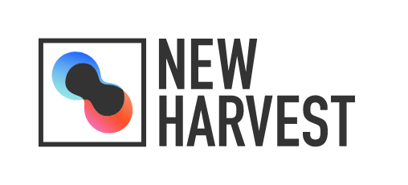
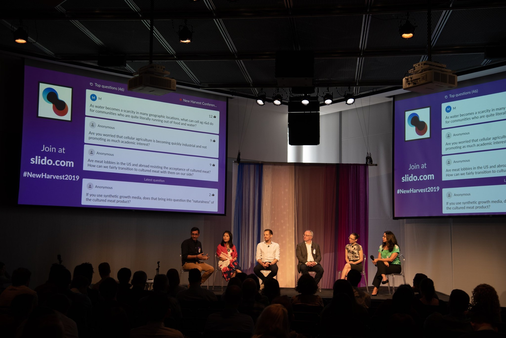
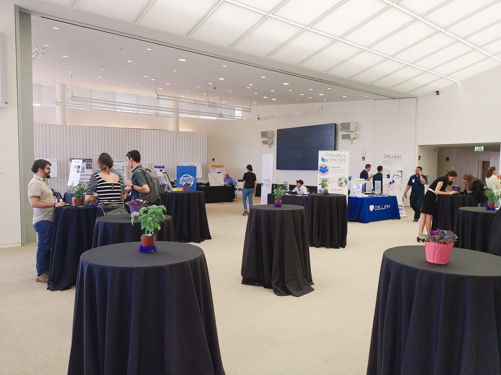
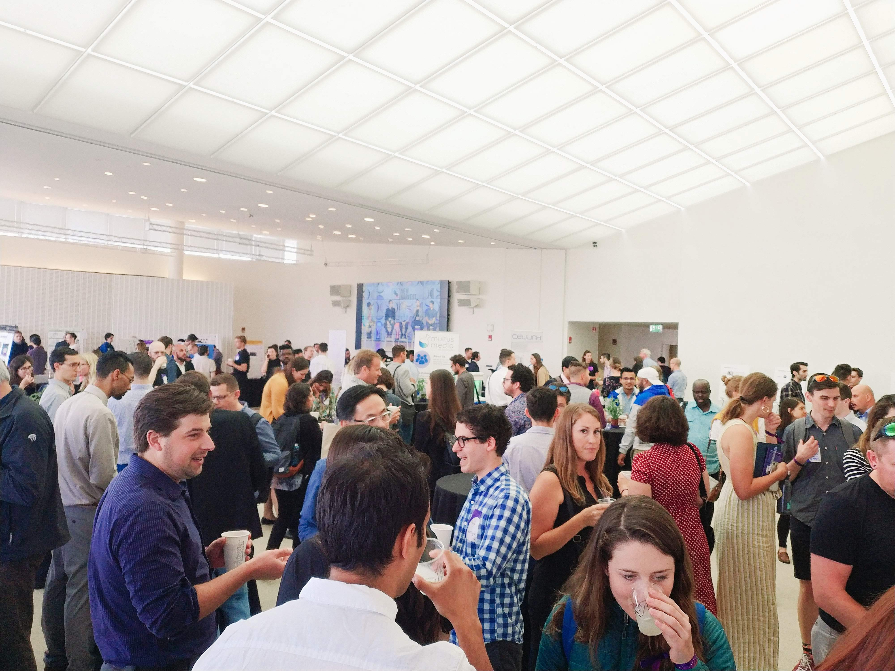
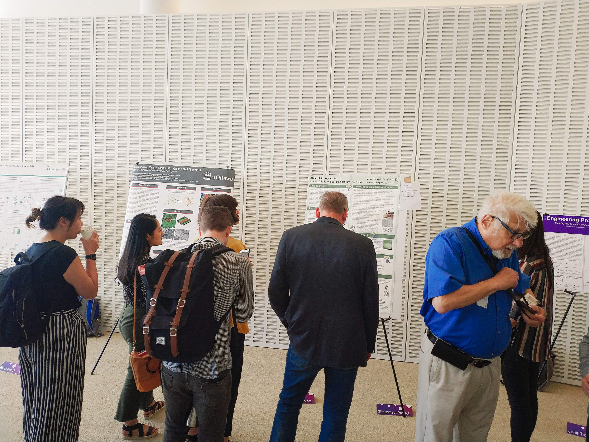
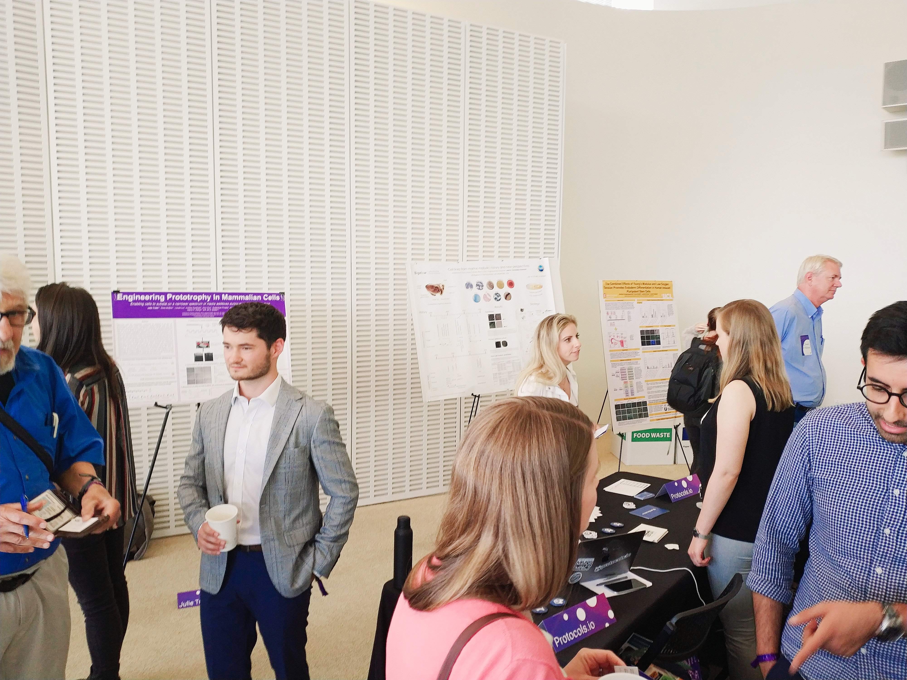
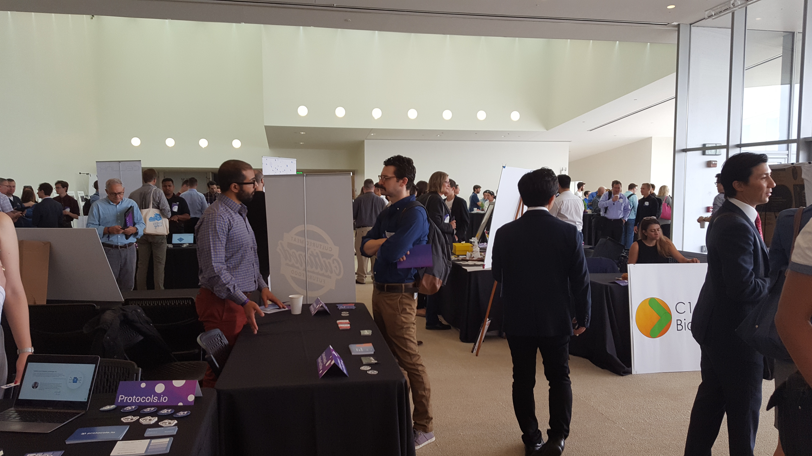

New Harvest 2019 参加レポート
Posted on 日 21 7月 2019 in Cellular Agriculture
目次
- 概要、動機
- New Harvestとは？
- New Harvest 2019
- 展示内容
- Shojinmeat Projectの発表
- 内容
- 評判
- 参加者の様子
- 個人的な感想
- 感想
- 細胞農業の最先端に触れられる
- コミュニティの一員となり、多くの仲間と知り合うことができる
- 世界の動向を肌で感じられる
- 余談 〜ボストンの植物性フード事情〜
- 最後に
- お誘い
細胞農業分野の中心的な組織であるNPO法人 New Harvest という団体が主催する年1回のイベントNew Harvest 2019がアメリカ,ボストンのMIT Media Labで開催されました。私は、そのイベントにShojinmeat Projectの代表として参加し、Shojinmeat Projectの研究や活動内容をまとめたポスター発表をおこないました。New Harvest 2019のイベント内容を中心に、ボストンで過ごした非常に充実した数日間の様子をお伝えできればと思います。
そもそも細胞農業という分野は比較的新しく、将来重要になる分野であるにも関わらずあまり知られておらず、このNew Harvest 2019というイベントに参加していた日本人は数名であったので、その様子をお伝えし、多くの人に興味を持ってもらえればと思いました。

New Harvestは、アメリカのニューヨークとボストンを拠点とした、細胞農業を推進するNPO団体です。主に、ファンドとしての働きを持っていて、投資家などからお金を集め、細胞農業分野の発展のために産業界や学術界にお金を投資しています。この分野は重要でありながら新しく認知度の低い分野であることから、従来の投資環境では研究費を集めにくく、それを解決しようとして立ち上がったのがNew Harvestです。驚くべきことに2004年に設立され(随分早い！)、細胞農業(cellular agriculture)という言葉を使い始めたのもNew Harvestです。そのため、細胞農業自体はこのNew Harvestと共に発展してきたと言っても過言ではないでしょう。またファンド以外にも、細胞農業業界のコミュニティ形成、正しい情報の提供と教育にも力を注いでいます。 現在、10人弱の主要メンバーで構成されているようで、資金源は完全に投資家などからのDonationで成り立っており、フルタイムメンバーは多くないものの、New Harvestを中心としたコミュニティは非常に大きく、研究費支援をもらっている研究者など何かしらの形で関わっている人の数を入れると相当な数になると思われます。
そんなNew Harvestが開催するイベントですから、細胞農業業界においては世界最大規模のイベントです。このイベントNew Harvest Conference は毎年開催され、2016年に 第1回 がサンフランシスコで、2017年の 第2回 はニューヨーク2018年の 第3回 と 第4回 となる今年の2019年はボストンのMIT Media Labといった具合にアメリカの主要都市で開催されています。ちなみに、第2回と第3回にはShojinmeat Projectの代表の羽生雄毅さんがスピーカーとして登壇しました。(その様子はこちら#todo)
展示内容
メインは、2,300人が収容されるホールでのプレゼンテーションやパネルディスカッション。 
発表のタイトルはNew Harvest 2019のサイトのAgendaから、実際の様子はYoutubeのNew Harvestチャンネル から全て見られます(素晴らしい！！)。そのうち消されてしまうとNew Harest側からの連絡がありましたが(2019年9月現在残っている)、まだ見られるようです。自分はダウンロードしたので消されてしまった場合は欲しい方にお渡しすることも可能ですが画質が少し悪いのと音と動画がずれているのが難点です。自分も会場にいる間、聞かなかった講演もありますし(というか後で動画で見られると知ってからは、ほとんど会場の人と話していました...)、理解できなかった部分も多いのでまた見返したいと思います。 メインホールでの発表の合間にコヒーブレイクなるものがあり、展示スペースに皆戻って展示の見学やおしゃべりを楽しんでいました。 | 展示会場の様子 | | | --- | --- | |  |  |
講演内容は以下のような種類のものがありました。 * New Harvest から援助を受けて研究しているPhDやMS学生の研究発表 * 細胞農業に関わるスタートアップ企業の取り組みの紹介 * 細胞農業生産物に対する政府等による規制やルール作りの概観 * 細胞農業が盛んな都市とその現状の紹介 * 細胞農業業界でのキャリア
どれもとても興味深いものばかりでした！規制やルール作りに関しての話は個人的には全くついていけず、後で同世代の友達を話したところ、あれは難しいし、退屈だったと話していましたが...
Shojinemeat Projectの発表
以下の画像のポスターを、A1サイズで印刷し持っていきました。ちなみにA1サイズだとポスターケースに入れても機内持ち込みはできないことが多いです。預け荷物にしてロストバゲッジするのが怖かったので、不織布という折り畳んでも跡がつきにくい布に印刷してもらい、軽く畳んでバッグに入れて大切に持ち歩きました。
会場の展示スペースでこのポスターを貼り、見にきてくれた人にポスターの内容を説明したり、そもそもShojinmeat Projectは何をやっている組織なのかを説明したりしました。
内容
内容は、今までのShojinmeat Projectの取り組みをまとめて紹介したものです。Shojinmeat Projectは研究に使われる高価で手に入らないものではなく、誰でも手の届くものを使って、一般市民でも簡単に安価に自宅でできるバイオ実験の方法の開発を目指しています。 現在は細胞農業の観点から、自宅でもできる安価な細胞培養方法の開発を進めており、今までの成果をまとめたものが以下になります。

- Basal Medium (基礎培地の代用)
- 研究ではDMEMという培地が用いられるのが一般的。しかし一般市民は基本的には購入できないし、比較的高価である
- スポーツドリンクで代用したり、食品添加物で売られているもので1から作る方法の紹介
- Growth Factor (細胞の成長に必要な成長因子)
- 成長因子としてウシ血清アルブミン(FBS)が用いられているが、購入が難しい上、供給不安定で高価
- 卵黄による代用実験
- 肝臓の共培養の可能性
- Antibiotics (細胞の成長を邪魔する菌を殺す抗生物質)
- 卵白による代用実験
- Freezing of cells (細胞凍結)
- 研究においてはディープフリーザーが用いられるが高価
- イソプロパノールとドライアイスを組み合わせた寒剤を用いた細胞の凍結方法
- Centrifuging cells (遠心分離)
- 専用の遠心分離器が用いられるが、頑張れば扇風機でもできる！！
- The value of citizen science (誰でも参加できる市民科学の価値)
- 独創的なアイデアが豊富に生まれる
- バイオテクノロジーを身近に感じ、かつ培養肉の生産方法も完全に公開し高い透明性。一部企業が独占することで不信感を生んだ遺伝子組換え作物とは異なり、高い透明性と一般市民のコミットで、培養肉をはじめとした細胞農業が社会に受け入れられる基盤となる
- Shojinmeat Projectはそれを推進している
以上がポスターの内容です。
評判
| 展示会場の様子 | |
|---|---|
 |
 |
|  |  |
|  |  |
一言で言うと、「一番大好評のポスター」(著者主観)でした。以下の写真からもわかるように、ポスターブースに来ている人たちのほとんどがShojinmeat Projectのポスターを見ています。自分が説明している時にも人が集まっていますし、自分がいない時も、同じタイミングで撮った写真(6,7枚目の青い服のおじさんが写っている2枚を比較)では、圧倒的にShojinmeat Projectのポスターの前に集まっていることがわかります。 メインホールでプレゼンが行われている時の様子は、一番右下の写真。Shojinmeat Projectのポスターの前で止まってじっくり見ている人が多かったです。
たまたま集まっている時だけを載せているように思うかもしれませんが、自分の観測範囲では、集まり具合は圧倒的でした。
また、ある参加者には、「あなた達のポスターが一番良いって聞いたわ」と言って、見に来てくれる人もいました。 他にも、ポスターいいねとか、デザイン良いねと褒めてくれる方もいました。 みなさんにポスターを楽しんでもらえて非常に良かったと思います。なぜここまでポスターが人気だったのかというと、それはShojinmeat Projectの取り組みがわかりやすく、親しみやすく、非常にcoolでcrazyで面白いからだと思います。
実際、ポスターの内容に関しては、スポーツドリンクでのDMEMの代用、遠心分離機の扇風機での代用が特に人気でした。このような面白いアイデアを創出する場とてのコミュニティの重要性、バイオテクノロジーの利用の敷居を下げ、民主化することで、様々な取り組みを可能にする市民科学の可能性についても強く主張し、興味を持ってもらうことができました。 今回のポスター発表によって改めてShojinmeat Projectの活動の価値や意義を参加者の方に知ってもらえただけでなく、自分自身でも強く感じることができました。
----
イベントの最後には、New Harvest 2019開催の数日前に発売されたPerfect Day Foodのanimal-free ice creamのオークションが行われました。このアイスは細胞培養技術を用いて、卵や牛乳を使わずに作られたアイスで、発売数日ですぐに完売してしまいました。特別にこのイベント用に残していたアイスがオークション形式で販売され、強者が$600で落札していました。 そのあとは、Tufts UniversityのDavid Kaplan研究室のラボツアーに参加しました。それと並行して、近くのバーで開催された食事会が行われました。自分は、あまりにも疲れていた上、バーが激混みで座る場所はなく、大声で話さないと聞こえないくらいであったため、ラボツアーに参加した後、食事会には少しの参加で帰宅しました。
更に、Whole Foods Marketで売られていた、Beyond MeatのPlant based burger pattiesと、JUSTのJUST Egg(植物性の卵)も買って料理してみました。Impossible foodsの植物性の肉を色々食べてみた
— Naoto Yamaguchi (@nafoto_z) July 21, 2019
①サンドイッチに入ってたミンチはハーブの味付けが強すぎて微妙…
②ミートボールはトマトの味付けで美味しかった。普通にミートボール
③バーガーは、マクドナルドの普通のバーガーより歯応えも肉汁もあり肉感があって美味しい！（高いけど） pic.twitter.com/joSMfxiZke
【植物性の肉と卵を料理してみた】
— Naoto Yamaguchi (@nafoto_z) July 22, 2019
最近上場したBeyondMeat のビヨンドバーガーとJUSTのスクランブルエッグをスーパーで買って料理してみた
バーガーの味→焦げてよくわからない
スクランブルエッグの味→冷めてそんな美味しくない
わかったこと→料理向いてない pic.twitter.com/uXLZjVYkTo